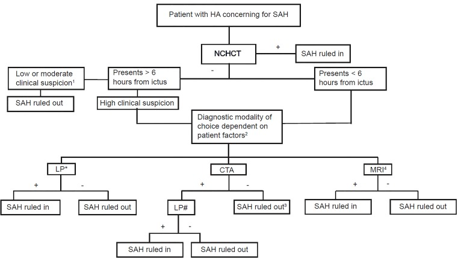

HSA→TC; tumor→RM+C; meningite→PL; dengue→NS1 — não existe exame único da cefaleia.
P09E5exame dirigido4 raias
Não existe exame universal
O exame a pedir depende da suspeita — não existe um único “exame de cefaleia” universal. Investigação complementar nas secundárias é dirigida pela hipótese, não por painel cego.
Quatro pares suspeita → exame
Suspeita de hemorragia subaracnoide → TC de crânio sem contraste (para ser mais rápido). Suspeita de tumor → ressonância magnética com contraste. Suspeita de meningite → punção lombar. Suspeita de dengue (exemplo sistêmico) → exame etiológico do tipo NS1.
Limite clínico
Os quatro pares definem o exame inicial conforme a suspeita; etapas posteriores dependem do protocolo e do contexto clínico.
Função da abordagem sindrômica
A abordagem sindrômica da cefaleia organiza o raciocínio em prova e na prática antes de aprofundar cada hipótese específica. É compacta, mas ancora a triagem.

Imagem real Suspeita de HSA → TC de crânio primeiro; se a TC não confirma e a suspeita persiste, a investigação continua. A investigação não é “genérica da cefaleia”.
Patel S, Parikh A, Okorie ON. Figure 2 from “Subarachnoid hemorrhage in the emergency department”. International Journal of Emergency Medicine. 2021;14:31. https://doi.org/10.1186/s12245-021-00353-w. CC BY 4.0.
Ilustração Quatro raias exame-por-suspeita: HSA→TC · tumor→RM+C · meningite→PL · dengue→NS1. Toque nas raias para ver o porquê.
Quiz — fixação
Suspeita de HSA — primeiro exame:
Gabarito B. HSA → TC sem contraste porque velocidade importa.
(A) é o par do tumor. (C) dengue. (D) ignora alarme. Cai por trocar “sem contraste” por “com contraste” por hábito de tumor.
Suspeita de tumor — exame preferencial:
Gabarito B. tumor → RM com contraste.
(A) é o par inicial da HSA. (C)(D) ficam fora dessa suspeita. Cai por unificar tudo em “TC de crânio”.
A regra-mãe da investigação na secundária:
Gabarito B. hipótese comanda o exame.
(A) painel cego. (C)(D) absolutos falsos. Cai por protocolo decorado sem raciocínio.